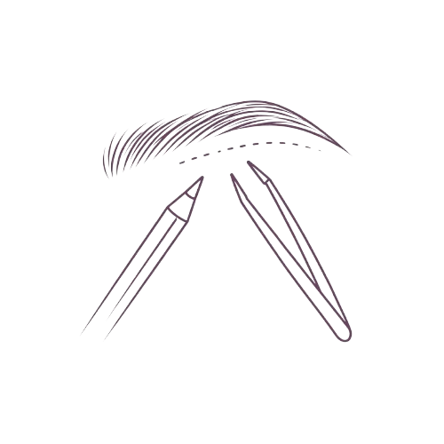
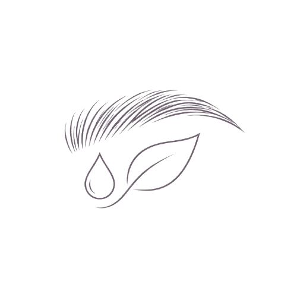
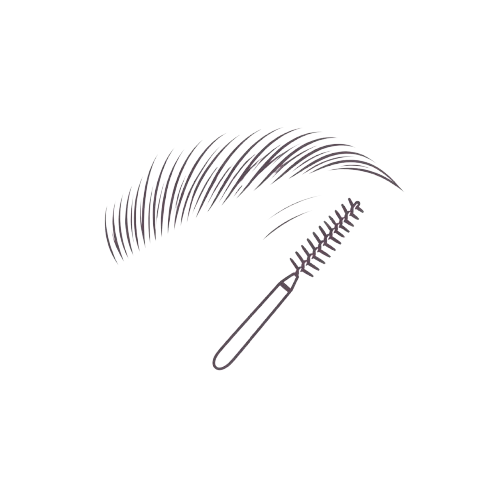

Especialidade
Sobrancelhas

Design
Mapeamento e modelagem das sobrancelhas de acordo com os traços faciais, promovendo equilíbrio e definição do olhar.
Design com tintura
Procedimento voltado ao fortalecimento e recuperação dos fios, auxiliando na melhora da estrutura e do aspecto das sobrancelhas.

Reconstrução
Aplicação de produto para tratar, fortalecer e melhorar a estrutura dos fios das sobrancelhas.

Brow lamination
Técnica de alinhamento e redirecionamento dos fios que proporciona sobrancelhas mais disciplinadas, encorpadas e com efeito definido.